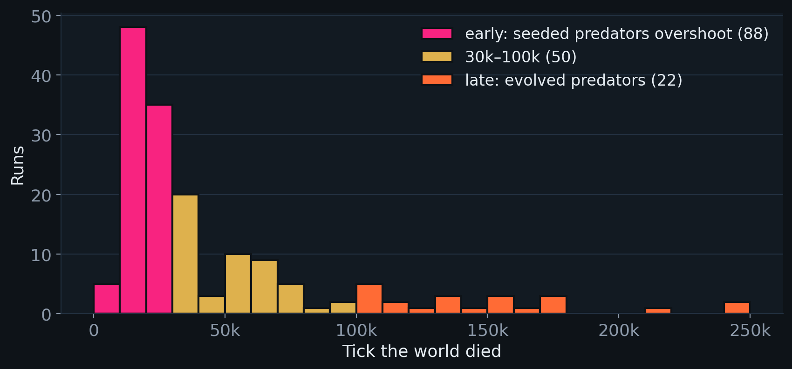
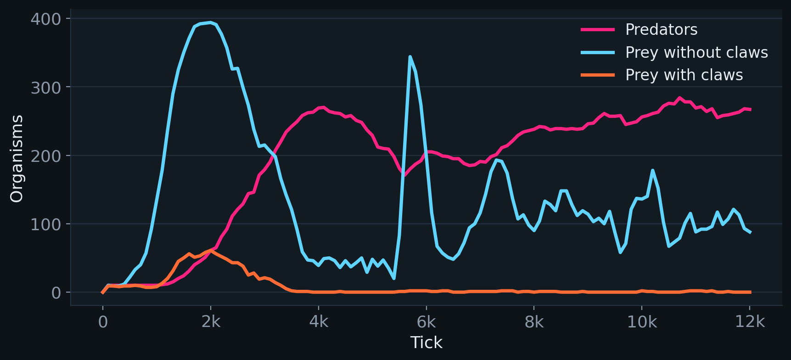
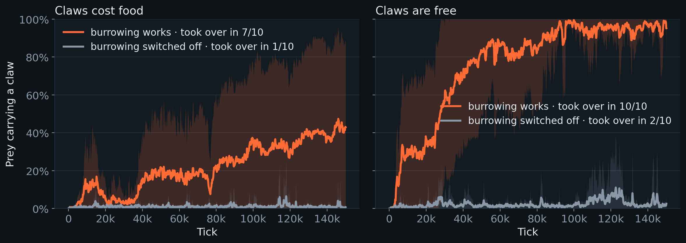
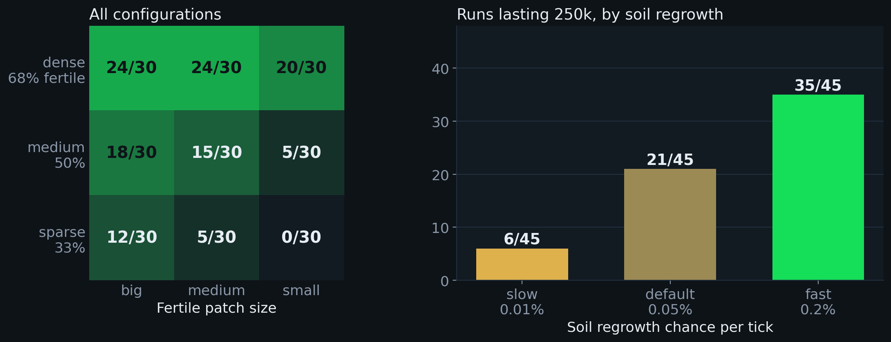
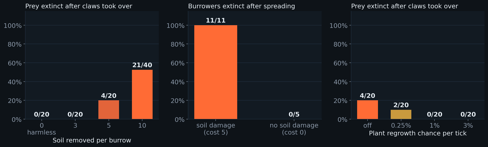
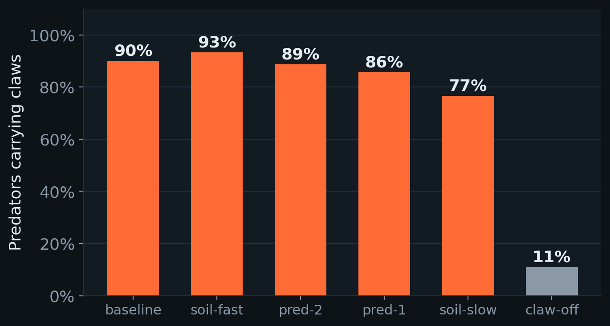

UCT Honours · Artificial Life · Life Engine
Digging
their own
graves
Burrowing, soil and extinction: can a trait that saves each individual doom the population?
The organism
A world of cells, soil and one new trait
- Organisms are built from cells. Each cell type does one job, and offspring mutate by adding, removing or changing a cell.
- Soil fertility. Plants are only born where the soil under them averages at least 7 of 10. Unoccupied soil slowly regains fertility.
- The claw cell. A prey with a claw that sees a predator burrows: it is invisible for 100 ticks and doesn't age, but each burrow strips 10 fertility from the soil under it.
- Roles come from the body. A killer cell and no producer makes a predator; a producer that can't move is a plant; everything else is prey.
producermouth
movereye
killerclaw
food
The biology
Evolutionary suicide: when adaptation causes extinction
Natural selection favours whatever helps individuals leave more offspring, even when it harms the population. If a favoured trait degrades something everyone depends on, selection can drive its own carriers extinct.
Gyllenberg & Parvinen (2001), Bull. Math. Biol.; Rankin & López-Sepulcre (2005), Oikos, "Can adaptation lead to extinction?"; Hardin (1968), "The tragedy of the commons", Science.
A real echo: burrowers reshape soil
Burrowing animals are ecosystem engineers. Introduced European rabbits in Australia, for example, burrow and graze so heavily that they strip vegetation and drive soil erosion.
Our hypothesis
1 · individual gainBurrowing hides a prey from predators
2 · selectionClaws spread through the prey
3 · shared costEvery burrow drains the soil plants need
4 · collapsePlants fail, food runs out, burrowers die
The test: does the population survive without the trait, and only collapse with it?
The experiment
Nearly 2,000 simulations, run like a field study
- Same code, no screen. A headless runner drives the simulator's own code, so hundreds of runs go in parallel.
- Seeded layouts, random lives. Soil and starting positions come from seeds; everything after that is stochastic, so replicates differ.
- Controls, like knockout experiments: the same starting layouts with one thing changed.
- claws seeded at the start, or left to evolve by mutation
- burrowing switched off, or harmless to the soil
- soil density, patch size, regrowth; predator strength; plant regrowth
| Study | Focus | Runs |
|---|
| Tarique | evolved claws, soil cost, predators | 456 |
| Nik | evolved claws, soil settings, maps | 170+ |
| Jenna | plant regrowth, plant death | 936 |
| Josh | seeded vs evolved claws, soil layouts | 380 |
Plus browser runs. 100,000–250,000 ticks each. Proportions compared with Fisher's exact test.
Question 1 · Did an extinction event occur?
Yes, at every level, and often
167/380
of our headless runs ended with every organism dead; in Nik's sweep, 111 of 111
21/40
runs where evolved claws took over and then every prey died (Tarique)
Lineages
The seeded predators died out in every batch run; seeded burrowing prey died out in every run with all the claw's benefits switched off

When 160 worlds died (batches with seeded claws, 300 runs). Most die early, a few after 100k ticks of apparent stability.
Question 2 · Mis-adaptation or failure to adapt?
failure to adapt Most worlds die before evolution can act
- The first predator wave. Seeded predators feed on the first prey boom, multiply about 25×, and overshoot.
- 88 of 160 world extinctions came before 30,000 ticks. When the prey died, 82% of predators were still the seeded ones.
- Claws appear within ~1,200 ticks, but prey were usually gone by 5,500, while claws were on only ~4% of them (Nik).
- With all the claw's benefits off, the seeded burrowers bred at half the rate of other prey and were the first to vanish.

Browser run, claw benefits off: predators boom and the clawed prey are gone by tick 4,000.
Question 2 · Mis-adaptation or failure to adapt?
mis-adaptation Given time, the claw evolves, because it works

No organism starts with a claw. It appears by mutation in every run (80 of 80), within a median of about 1,000 ticks.
It spreads only when burrowing works: 7/10 take-overs against 1/10 when claws cost food (p = 0.02), 10/10 against 2/10 when free (p = 0.0007). Selection favours the claw for burrowing.
Question 2 · Mis-adaptation or failure to adapt?
mis-adaptation …and then the burrowers dig their own grave
8kEvolved claws take over the prey
8k → 15kBurrows drain the soil to 74%
→ 20kPlants crash from 468 to 35
→ 57kClawed prey dwindle and die
65kNothing is left
21/40 vs 0/20
prey extinct after claws took over, damaging vs harmless burrowing (Tarique, p = 0.00002). Without working claws, prey survived 17/20.
11/11 vs 0/5
burrower populations extinct after spreading, with vs without soil damage (Nik, p ≈ 0.0002).
Question 2 · Mis-adaptation or failure to adapt?
Both, depending on how far evolution gets
failure to adapt
The common route
- Strong seeded predators, prey with no defence yet
- Collapse within ~30k ticks, before the claw spreads
- Happens just as often with burrowing switched off (Nik's controls)
mis-adaptation
Evolutionary suicide, when the claw gets a chance
- The claw evolves and spreads because it protects (vs burrowing off)
- It kills only when burrowing damages the soil (vs harmless burrowing)
- Prey survive without the claw: the collapse is the trait's doing
A second, subtler route
Clawed prey that grow a killer cell can become predators. In 9 of 22 late collapses, the predator that wiped out the prey had evolved from the prey's own lineage, and in about 10 a newly evolved predator spread and the world died within a few thousand ticks. Suggestive of evolutionary suicide, but not yet proven by replay.
Question 3 · Environment vs the initial seeded species?
The seeded species decide whether burrowers get a chance; the environment decides what happens to them
seeded species
- Predator strength sets the first wave: at lifespan ×3, predators killed all prey in 7/8 runs even without burrowing; ×2 lets prey survive (Tarique)
- Seeding claws lets prey skip the wait and survive the first wave
- The seeded predators never last: evolved predators replace them
environment
- Soil density, patch size and regrowth (right)
- Plant regrowth rescues worlds from the claw (Jenna)
- Map luck: the pattern appeared on one soil map, not another (Nik)

Josh's soil-layouts batch: 270 runs, 6 setups × 9 soil layouts × 5 soil seeds. Runs lasting 250,000 ticks.
Question 4 · Instrumental features and traits
What made the difference

Left: Tarique, soil removed per burrow. Middle: Nik, soil damage on vs off. Right: Jenna, plant regrowth (reference settings).
environment
- Soil damage per burrow: 0 or 3 never collapses; 10 collapses half
- Soil and plant regrowth: fast recovery rescues the world
- Food blocking: without consumers, food chokes plant offspring
traits
- Claw: the trait that both saves and dooms
- Eye: claw mutations often replace it; 11 of 12 clawed prey in one replay were blind and never burrowed
- Killer cell: turns clawed prey into predators; hide length: at 30 ticks the claw never pays
Evolution finds loopholes
When claws were free, predators took them, and lost their eyes
seeded predator6 cells · 11 food to breed
→
eyeless clawed predator5 cells · 4 food to breed
- A free claw adds lifespan and health but costs no food, so predators keep them; none ever burrowed.
- Mouths are useless to predators and eyes cost food: a cheap random walker breeding ~3× as often beats a hunter.
- It came to dominate some worlds on its own: selection optimises the rules, not the design.

Share of predators carrying claws late in the runs, across 9 soil layouts. Claw-off: claws cost food.
Answers to the brief
In four lines
1Did an extinction event occur?
Yes: whole worlds, prey populations and lineages went extinct in a large share of runs.
2Mis-adaptation or failure to adapt?
Mostly failure to adapt, as the first predator wave struck before the claw spread. When the claw had time, it was a mis-adaptation: favoured for hiding, fatal through the soil it destroyed.
3Environment vs the initial seeded species?
The seeded predators decide whether burrowers get a chance; soil and plant recovery decide whether the burrowers then destroy themselves.
4Instrumental features and traits?
Soil damage per burrow, soil and plant regrowth, food blocking; the claw, the eye it replaces, and the killer cell that turns prey into predators.
Limitations and next steps
What we can't claim yet
Limitations
- 10–40 runs per setup: differences of 2–3 runs could be chance
- Studies used slightly different settings and grids
- Collapse rate depends on behaviour settings: with "burrow only when a predator is close" on, evolved claws collapsed 2 of 20 worlds here, against 21 of 40 in Tarique's runs with it off
- Proximate cause of death is mostly predation; the soil acts by stopping plants recovering
Next
- Measure fitness of clawed vs clawless prey during a decline: does selection still favour the claw?
- Replay suspected suicides with and without the invading predator
- Close the free-claw loophole for predators
- More soil maps per setup
Thank you
Questions?
Built on The Life Engine by Max Robinson, extended with soil fertility, burrowing claws, role tagging, seeded run setup and a headless experiment runner.
References: Gyllenberg, M. & Parvinen, K. (2001). Necessary and sufficient conditions for evolutionary suicide. Bulletin of Mathematical Biology 63, 981–993. · Rankin, D. J. & López-Sepulcre, A. (2005). Can adaptation lead to extinction? Oikos 111, 616–619. · Hardin, G. (1968). The tragedy of the commons. Science 162, 1243–1248.